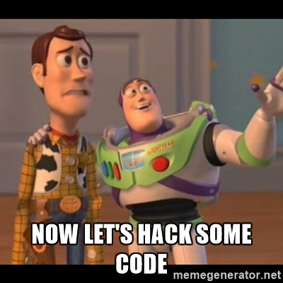
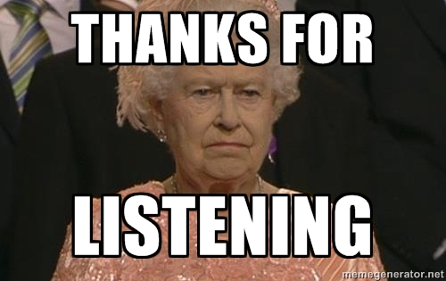

Programming Games with JS
for your Browser !!!!11!!!
WHOIS Sebastian Hardt ?
- AKA Seppel
- Born: 02.10.1980 @Kassel
- Fullstack developer @Micromata since 10 years.
- Organizer of the JUGH togeteher with @Junterstein
- OSS Lover since ever.
- Coder,Maker, Hacker ... Nerd :)
- Father, Old Cars Lover, Climber
Games in JavaScript
YEP totally
Why it works.
- Browser are multi platform ! Write ones runs everywhere.
- Canvas awesome way to do 2d stuff.
- Webgl we can display 3d stuff. WEEEEE
- Websockets we have network :) WO ticks.
- Audio/Video API we can make it noisy.
- Event driven since ever.
- Joystick / Touch Support
- Web (CSS,DOM,JS) is getting mature.
What do i need ?
- Idea :) First Game ? Start with something low like a Mario clone.
- Some knowledge in JS is a nice start.
- A good IDE to code with.
- Level editor. Example Tiled
- A Framework. U don't want to do this :) pahser
- People for the asset management
- or OSS Assets :) opengameart
Okay some time left. ....

Sample with quintus.

any questions ?
- https://github.com/tuxBurner
- @SebasthSeppel